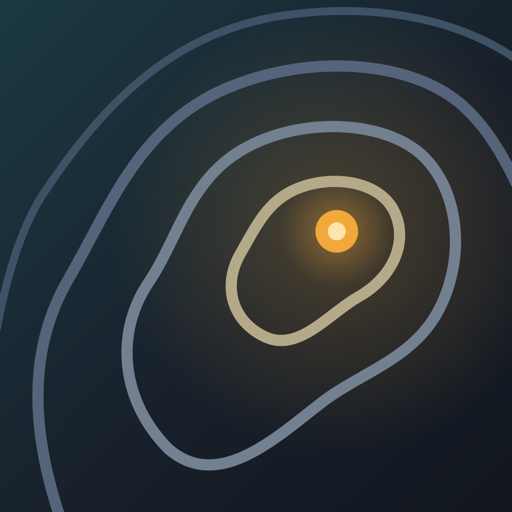

Privacy
Zenz, for iPhone, iPad, Mac, Windows, Linux and Android
Zenz collects nothing about you. There is no account, no advertising, no analytics and no tracking, and nothing you do in Zenz is sent to me or to anyone else.
Effective 24 November 2026.
What stays on your device
Your games, your saved games, your notes, the maps Zenz draws, your settings and any files you attach to a game are kept in Zenz's own folder on your device and are never uploaded. Your device's own backups, such as iCloud Backup, may include that folder, as they do for any app.
If Zenz closes unexpectedly, it writes a crash log and a short trail of its last steps into the same folder. They stay there. The next time Zenz opens, Home offers to share or copy the log, and it only goes anywhere if you choose to send it.
What Zenz fetches from the internet
Zenz goes online only for these, and only when you use them:
- Finding games. What you search for is sent to the Interactive Fiction Database (ifdb.org), which answers with matching games.
- Game details and covers. To show a game's cover, author and description, Zenz asks IFDB about the games in your library, by their title and the identifier the game carries.
- Downloading a game. A free game you choose is downloaded from the IF Archive (ifarchive.org).
- Hints. If you ask for hints to one of Infocom's games, they are downloaded from the IF Archive.
These requests name only Zenz and its version. They carry nothing about you. Like any website, those sites see the internet address the request comes from; their own privacy policies cover what they do with it.
Tips
On iPhone, iPad and Mac, a coffee is bought through Apple's In-App Purchase, so Apple handles the payment and Zenz never sees your payment details or who you are. Zenz remembers on your device that you tipped, only to say thank you. On Windows and Android, the coffee button opens Buy Me a Coffee in your browser, whose own privacy policy applies.
Children
Zenz collects no information from anyone, including children.
Changes and questions
If this ever changes, this page will say so, with a new date. Questions are welcome through Report a problem.